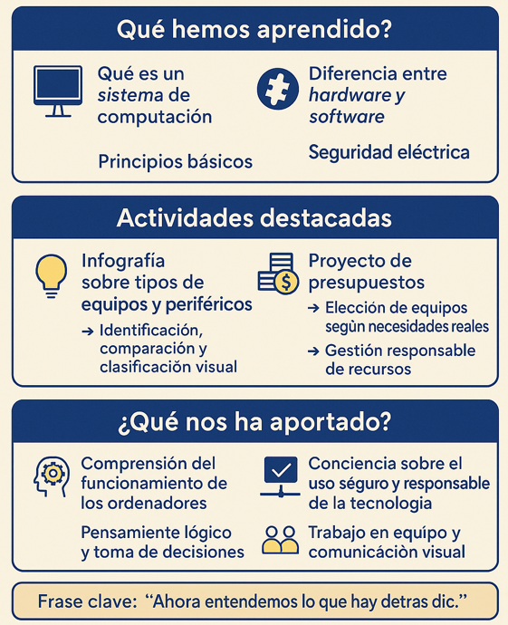

Ya has terminado la tarea ¡Enhorabuena!
Una vez hemos terminado la tarea es momento de reflexionar sobre qué hemos aprendido.
A lo largo de este recurso hemos dado los primeros pasos en el mundo de la computación física, una materia que, aunque pueda parecer técnica o lejana al principio, tiene un reflejo directo en nuestro día a día. Comprender qué es un sistema de computación y cómo interactúan sus componentes —hardware y software— nos ha permitido desentrañar esa “caja negra” que muchas veces es un ordenador. Ya no lo vemos como un misterio, sino como un conjunto de piezas que cumplen funciones concretas y que, en conjunto, nos permiten crear, comunicar, investigar o simplemente disfrutar.
También ha sido esencial tomar conciencia sobre la seguridad eléctrica, un aspecto que a menudo se pasa por alto, pero que resulta clave tanto en el uso responsable de la tecnología como en la prevención de accidentes.
Así que, en resumen, esta unidad no ha sido solo teoría. Hemos aprendido a pensar como usuarios críticos de la tecnología y, también, a valorar lo que hay detrás de cada clic.
Recordamos el trabajo realizado

Rúbrica: Póster informativo
- Actividad
- Nombre
- Fecha
- Puntuación
- Notas
- Reiniciar
- Imprimir
- Aplicar
- Ventana nueva
| Excelente (4) | Bueno (3) | Suficiente (2) | Iniciado (1) | |
|---|---|---|---|---|
| INFORMACIÓN APORTADA (x2) | La información está completa, clara y bien organizada. Refleja una comprensión profunda del tema. (8) | La información está mayoritariamente clara y es adecuada, con buena organización. (6) | Contenido básico, algo incompleto o desordenado. Se dificulta la comprensión del contenido. (4) | La información es confusa, está muy incompleta o es incorrecta. (2) |
| DISEÑO VISUAL | Excelente uso del espacio, colores e iconos. Muy atractivo y legible. (4) | Diseño claro y cuidado, aunque con pequeños errores de distribución o color. (3) | Diseño algo recargado o desordenado. Legibilidad mejorable. (2) | El diseño es pobre o desorganizado. Dificulta la comprensión. (1) |
| USO DE ELEMENTOS GRÁFICOS | Las imágenes y gráficos son relevantes, están bien integrados y complementan el mensaje. (4) | Uso adecuado de imágenes, aunque no siempre aportan al contenido. (3) | Pocas imágenes o mal seleccionadas. No se integran bien y no sirven de apoyo al mensaje. (2) | No hay imágenes o son irrelevantes o decorativas sin aportar valor. (1) |
| CREATIVIDAD Y ORIGINALIDAD | El enfoque es original, creativo y personal. Se nota implicación y reflexión. (4) | Presenta ideas propias, aunque no demasiado originales. (3) | Poca creatividad o copia de ideas sin adaptación. (2) | No hay aportación personal ni creatividad. (1) |
Rúbrica: Presupuestos equipos informáticos
- Actividad
- Nombre
- Fecha
- Puntuación
- Notas
- Reiniciar
- Imprimir
- Aplicar
- Ventana nueva
| Excelente (4) | Bueno (3) | Suficiente (2) | Iniciado | |
|---|---|---|---|---|
| SELECCIÓN ADECUADA DE EQUIPOS | Los tres equipos son totalmente adecuados a las necesidades planteadas, con marcas y modelos bien escogidos. (4) | Los equipos son adecuados, aunque alguno podría estar mejor ajustado al perfil. (3) | Los equipos son funcionales, pero faltan datos o alguno no se ajusta bien al caso. (2) | Equipos mal seleccionados o incoherentes con los casos planteados. (1) |
| ESPECIFICACIONES TÉCNICAS | Identifica y describe todos los componentes técnicos con claridad y precisión. (4) | Identifica la mayoría de componentes, aunque con alguna imprecisión. (3) | Incluye algunos componentes, pero de forma incompleta o con errores. (2) | No identifica correctamente los componentes o no los incluye. (1) |
| JUSTIFICACIÓN DE LA ELECCIÓN | Justificaciones claras, razonadas y personalizadas para cada equipo. (4) | Las justificaciones son adecuadas, aunque algo generales. (3) | Justificaciones vagas o con escasa relación con el equipo. (2) | No se justifican las elecciones o de hacerlo son incoherentes. (1) |
| PRESUPUESTOS COMPARATIVOS | Incluye al menos tres presupuestos por equipo, con enlaces y fuentes claras. Compara adecuadamente. (4) | Incluye para cada equipo tres presupuestos, pero la comparación es parcial o poco justificada. (3) | Incluye para cada equipo tres presupues-tos, pero la comparación es parcial o poco justificada. (2) | No hay presupuestos suficientes o no son comparables. (1) |